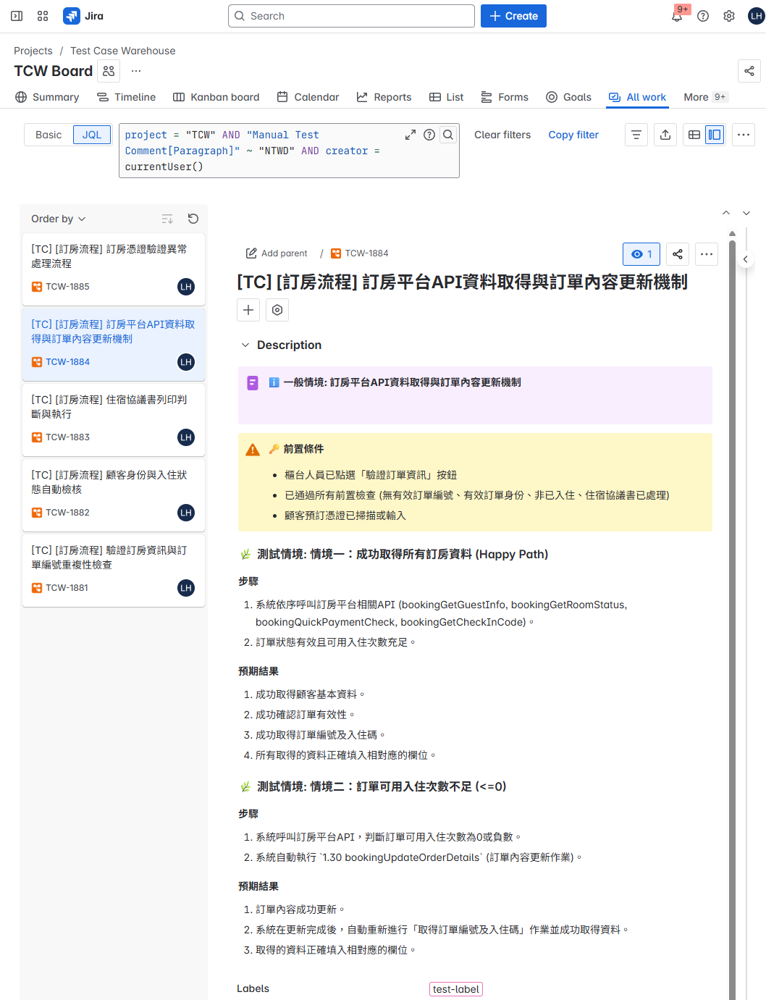

從 PRD 到 Jira：導入 n8n AI 多智能體，自動化測試案例生成
一個旨在革新測試流程、提升團隊生產力的 n8n 自動化專案
項目概述
在軟體開發流程中，手動根據產品需求文件 (PRD) 撰寫測試案例，是一項耗時且高度依賴人力經驗的關鍵任務。特別是在需求頻繁變更時，維護成本極高。
為了突破這個瓶頸，我實作了一套自動化工作流，利用 n8n 最新的多智能體 (Multi-Agent) 框架，串接 Confluence 與 Jira，實現了「一鍵生成測試案例」的目標。
核心做法與亮點
-
AI 智能體協作 (AI Agent Collaboration)建立一個擔任「測試案例統籌」的主智能體，它會協調兩個專用的向量知識庫：
- PRD 向量資料庫： 讓 AI 理解需求上下文，參考現有規格書相關功能，擴充測試情境的完整性。
- 既有測試案例向量資料庫： 確保 AI 產出的案例符合團隊現有的格式與風格，不會歪掉。
-
自動化 Jira 整合 (Automated Jira Integration)工作流不僅能批次建立 Jira Tickets，更能自動填入系統、測試分類 (Test Category)、優先級 (Priority) 等客製化欄位，為後續的測試分析與數據統計奠定基礎。
-
智慧型版本更新 (Intelligent Version Syncing)當 PRD 文件更新時，可選擇性觸發工作流，自動清除舊版測試案例並生成新版，大幅降低需求變更時的維護成本。
這個工作流不僅是單純的任務自動化，更是將 AI 技術實際應用於 SQA 流程改造的一次成功實踐。
成果展示
(已使用 Mock Data 替換，非公司資料。)


量化效益與真實影響
-
加速失業 不需要系統知識、開發維運經驗、跟 QA 技能，只要會複製貼上就能產出不差的測試案例。
-
效率躍升 從超過 1 小時的手動工作，縮短至 5 分鐘內的自動化流程。
-
品質與一致性 產出的案例草稿約 70-80% 可直接使用，讓 SQA 團隊能專注於更關鍵的測試分析。
-
降低知識門檻 簡化了新進成員或跨職能同事理解需求與測試點的過程，加速團隊協作。